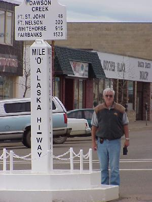
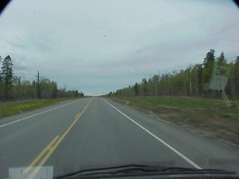
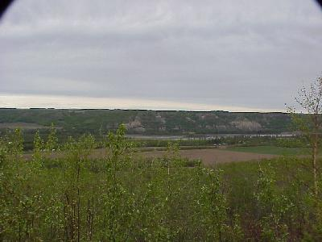

| We started the day checking out of the campgrounds at about 8:00. The weather cleared up, no more rain, but quite a few clouds. | |
Dawson Creek Can you believe it, we had to drive 3234 miles to get to Mile Zero of the Alaskan Highway! |
 |
| Just outside Dawson Creek the Alaskan Highway does not look all that bad; speed limit is 100km/hr, or just over 60MPH; two lanes, with a third passing line at major hills; wide shoulders; and a large cleared zone back to the trees. |  |
| A few miles down the road is one of the last remaining stretches of the original Alaskan Highway (the ALCAN highway in those days), gravel road, tight trees, curves, yea-ha. |
|
| The last remaining wooden trestle bridge also exists on this stretch of the old road. The bridge is 534' long and 100' high. |
|
| The Peace River is one of the largers rivers in this area. A dam a little ways upstream supplies a lot of the electricity for the southern half of the Province. We passed under its three transmission lines numeroust times today. |  |
| This may be our last night of leasure for
a while, so we checked into a Ramada Inn in Fort St.
Johns after traveling 222 miles. Not may miles but it
will give us a chance to get ready for the balance of the
Alaskan Highway. Wildlife for the day included: the four mule deer we saw standing just off the road. Thankfully no elk. |
|